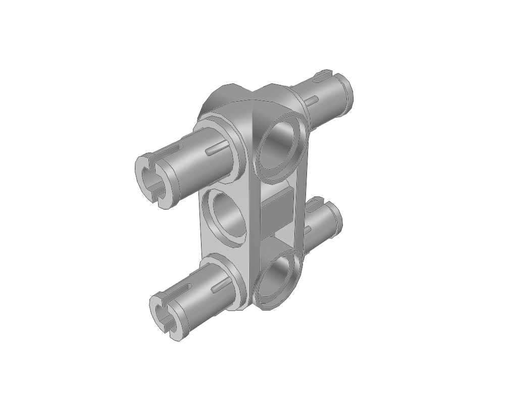
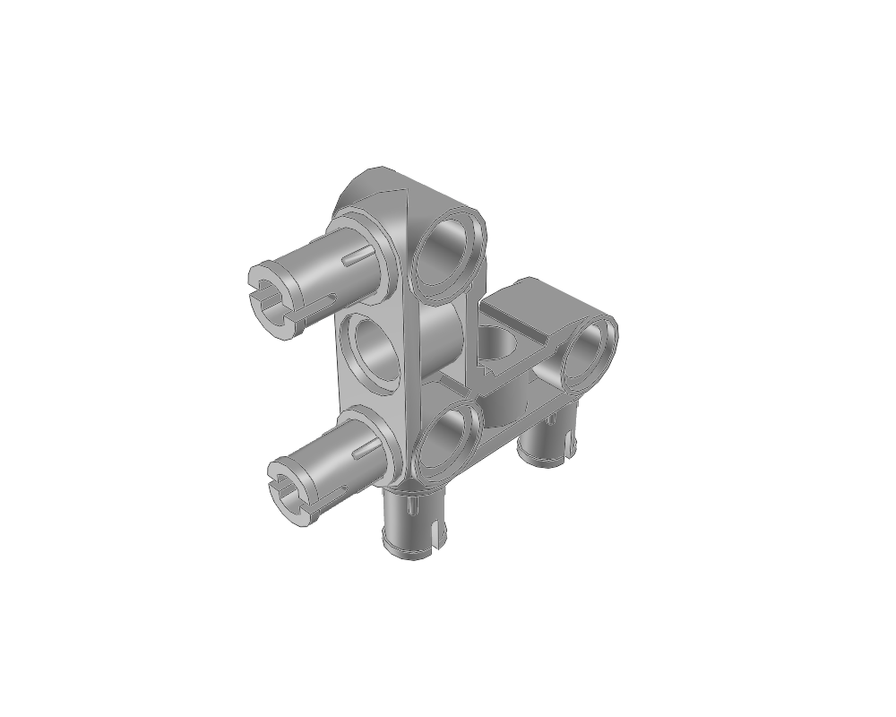
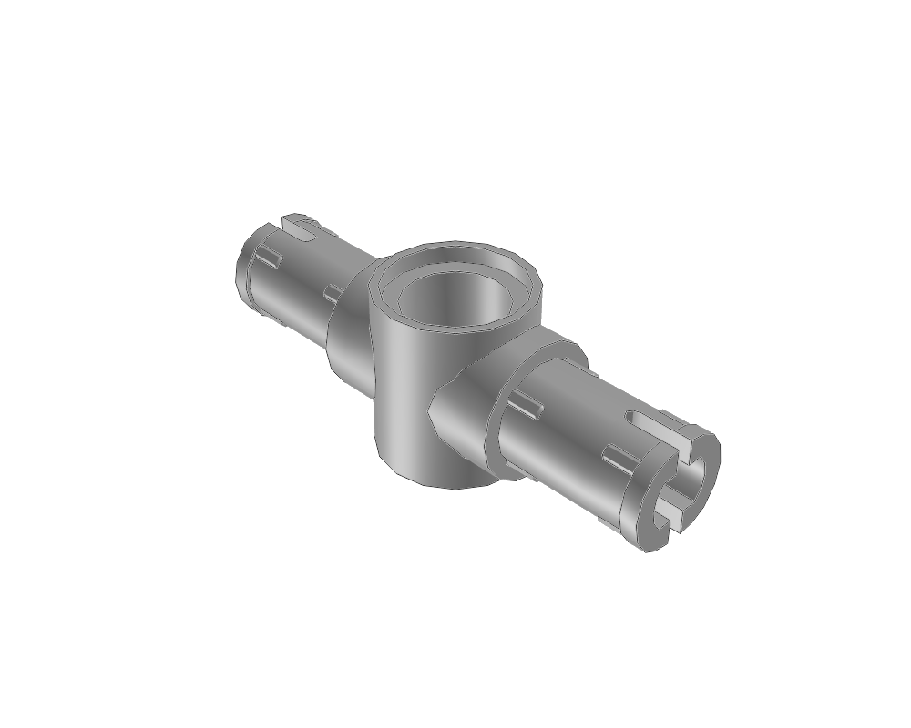

Technic Cross Block 1 x 3 (Pin/Pin/Pin) with 4 Pins
4898948989.dat · 20 × 58 × 60 LDU
Inspect sourceActual library geometry. Each view is fitted independently: compare the listed dimensions, not image size. Bounds include studs and decoration; they are not stacking heights.
4898948989.dat · 20 × 58 × 60 LDU
Inspect source
6548965489.dat · 20 × 58 × 60 LDU
Inspect source
5561555615.dat · 20 × 79 × 79 LDU
Inspect source
8708287082.dat · 60 × 20 × 18 LDU
Inspect source4487444874.dat · 60 × 20 × 18 LDU
Inspect source